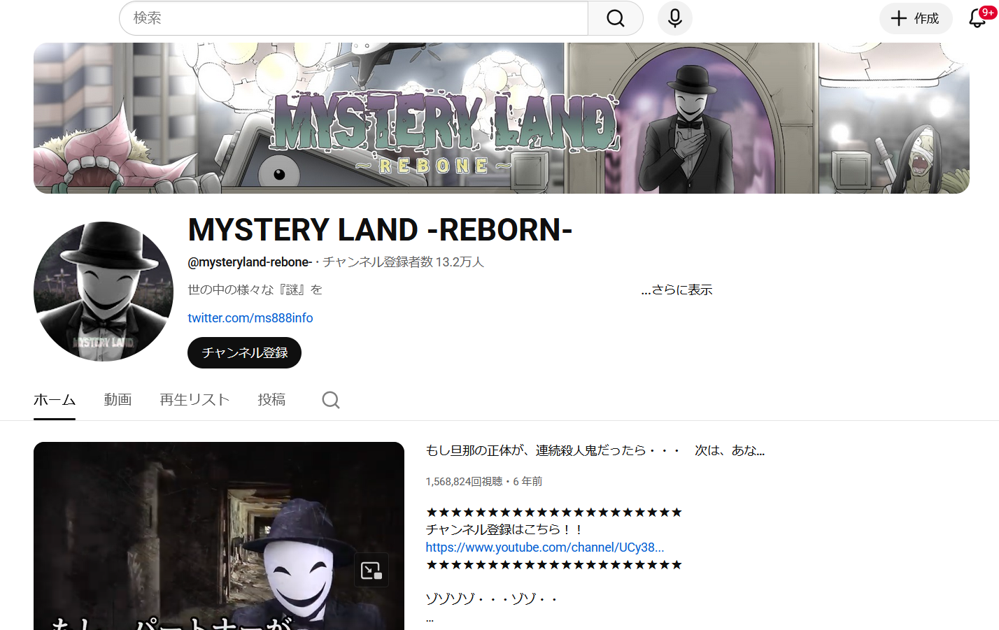
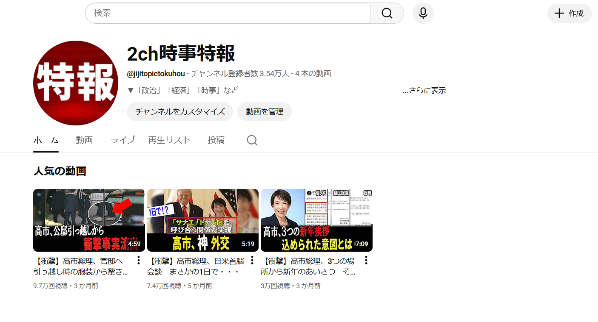
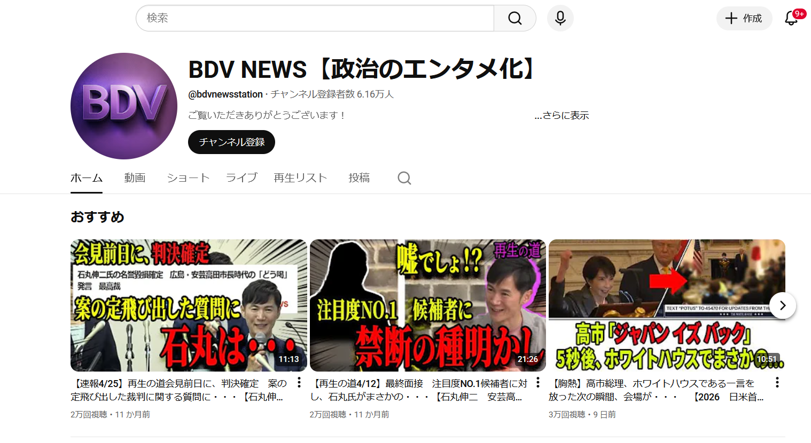
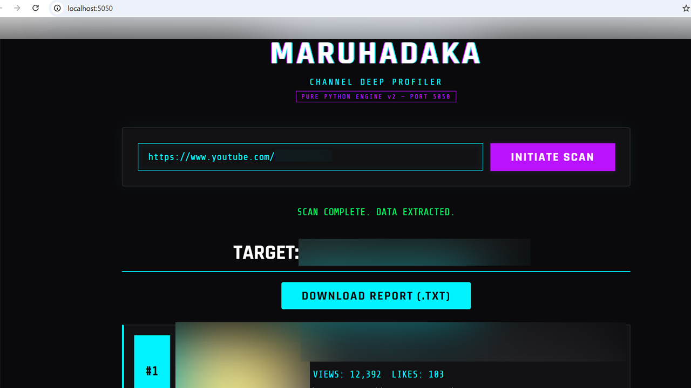

YouTubeチャンネル
MYSTERYLAND -REBORN-
世の中の「謎」をテーマに、案内人ソラリスがナビゲーターとなり、様々な摩訶不思議なストーリーを漫画形式でお届け。
登録者数
13.2万人
運営チャンネル・制作ツール実績
運営チャンネルと制作ツール

世の中の「謎」をテーマに、案内人ソラリスがナビゲーターとなり、様々な摩訶不思議なストーリーを漫画形式でお届け。

政治や時事のトレンドニュースを独自解説や論評を加え、視聴者に「今」世の中で何が起きているのかをお届け。
※現在はプラットフォーム規約変更に伴い、チャンネル方針見直しとリブランディングを進めています。

政治関連で今、ホットな話題を切り抜き＋解説にてお届け。選挙期間中は街頭演説に足を運び、生の声をお届け。

チャンネルURLを入力すると、該当チャンネルの直近10本分の再生数、いいね数、サムネイル、いいねの多いコメント上位20件、動画内容の文字起こしなどを抽出できる分析ツール。